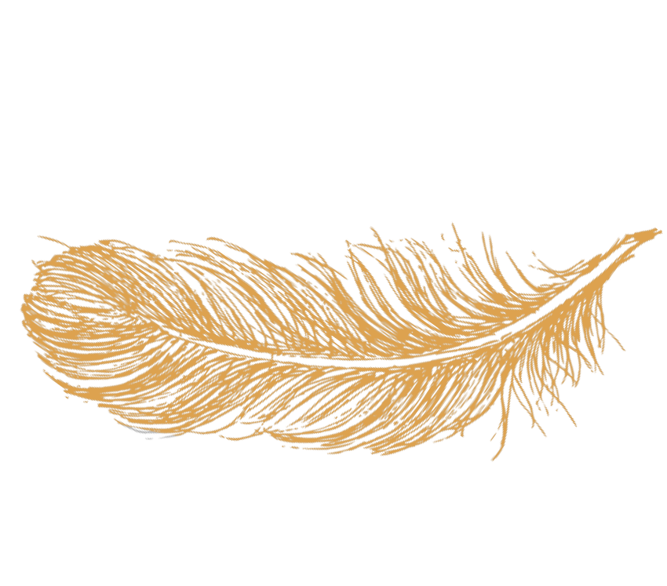

A Tortoise, discontented with his lowly life, and envious of the birds he saw disporting themselves in the air, begged an Eagle to teach him to fly. The Eagle protested that it was idle for him to try, as nature had not provided him with wings; but the Tortoise pressed him with entreaties and promises of treasure, insisting that it could only be a question of learning the craft of the air. So at length the Eagle consented to do the best he could for him, and picked him up in his talons. Soaring with him to a great height in the sky he then let him go, and the wretched Tortoise fell headlong and was dashed to pieces on a rock.
An Eagle sat perched on a lofty rock, keeping a sharp look-out for prey. A huntsman, concealed in a cleft of the mountain and on the watch for game, spied him there and shot an Arrow at him. The shaft struck him full in the breast and pierced him through and through. As he lay in the agonies of death, he turned his eyes upon the arrow. «Ah! cruel fate!» he cried, «that I should perish thus: but oh! fate more cruel still, that the arrow which kills me should be winged with an Eagle’s feathers!»
There were two Cocks in the same farmyard, and they fought to decide who should be master. When the fight was over, the beaten one went and hid himself in a dark corner; while the victor flew up on to the roof of the stables and crowed lustily. But an Eagle espied him from high up in the sky, and swooped down and carried him off. Forthwith the other Cock came out of his corner and ruled the roost without a rival. Pride comes before a fall.